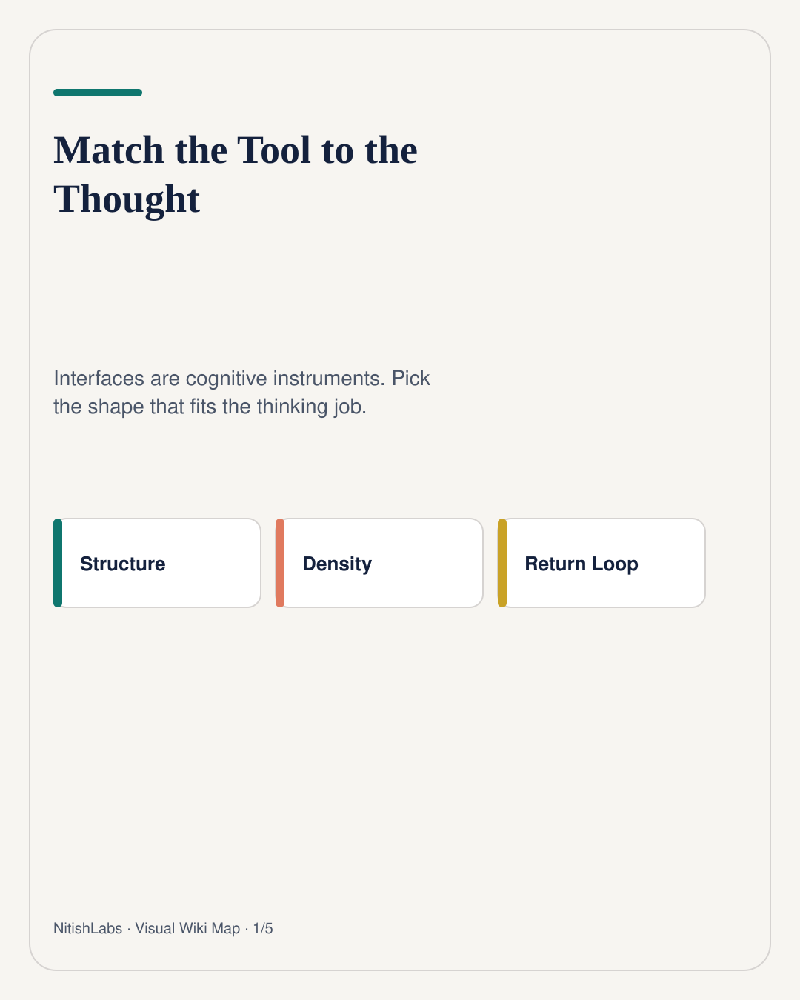
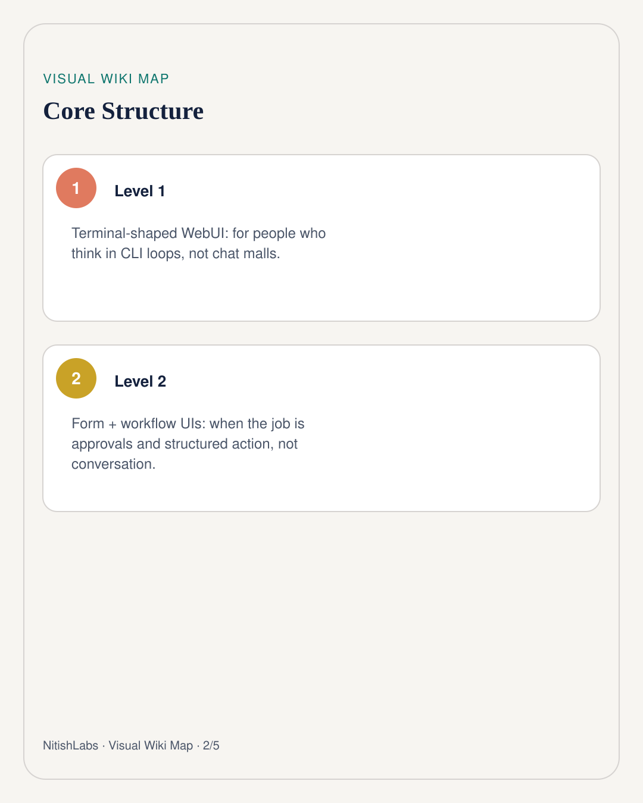
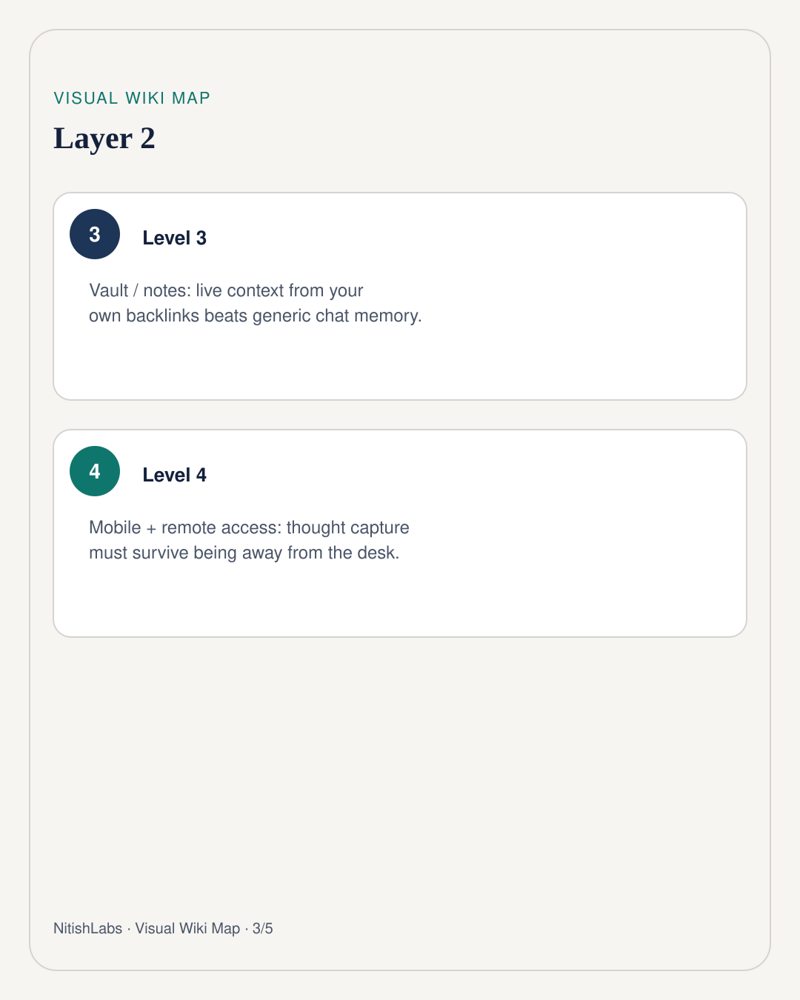
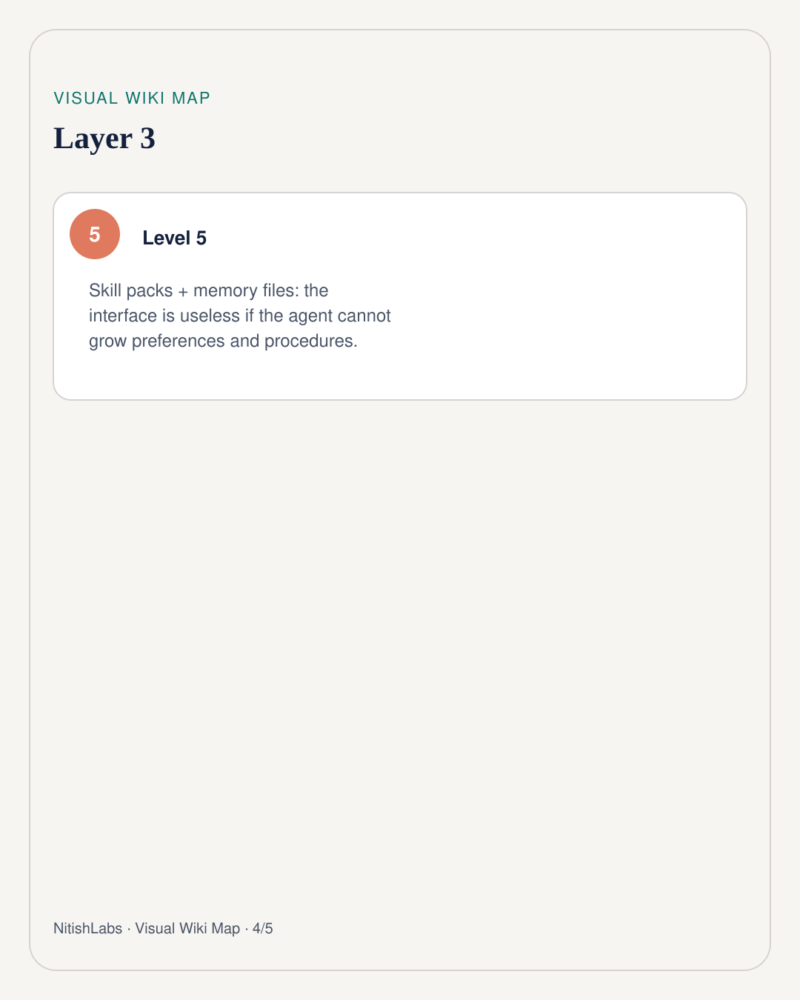
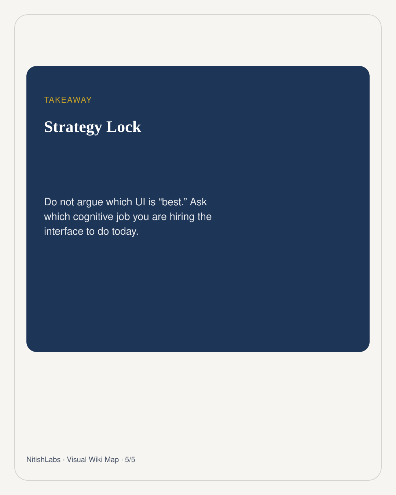

Match the Tool to the Thought
UI wars miss the point. Interfaces are cognitive instruments - hire the shape that fits the thinking job you are doing today.
Visual Wiki Map
Compressed schema carousel · swipe





Skimming Hermes-adjacent UI notes, Nitish Chauhan’s useful cut is not “which chat skin wins.” It is: different surfaces hire for different cognitive jobs. A terminal-shaped WebUI mirrors CLI thinking. A form/workflow builder turns the agent into approvals and structured action. A vault connection turns notes into live context. Mobile + remote access means thought capture survives leaving the desk.
Hire by job, not by fashion
- Dialogue / agent loop: lightweight WebUI that mirrors the CLI - spending limits, multi-agent profiles, less mall energy.
- Decisions & ops: internal tools (forms, databases, approvals) where the agent is logic, not the whole interface.
- Memory: Obsidian-style vaults and growing preference files so the agent remembers you, not a generic user.
- Away-from-desk: mobile clients and secure remote tunnels so capture does not wait for the perfect workstation.
Thought job → Interface shape Explore / reason → chat or spatial workspace Approve / route → forms + workflows Remember / link → vault + memory files Capture on the go → mobile + remote access
The silent upgrades
Skill packs, subagents, and hibernating environments matter because the interface is worthless if the agent cannot grow procedures or wake cheaply. Persistent memory files (preferences, libraries, style) are how a cognitive instrument stops resetting to stranger mode every morning.
Do not argue which UI is best. Ask which cognitive job you are hiring the interface to do today.
Same lesson as a thinking workspace: conversation mode and floating workspace mode are not competitors. They are instruments for different mental weather. Match the tool to the thought - then stop fighting about logos.